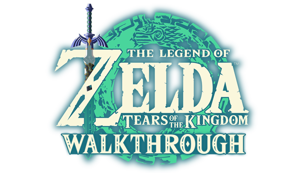
Prologue – Hyrule Castle Ruins (Mở đầu – Tàn tích Lâu Đài Hyrule)
Bạn và Zelda đi xuống tàn tích bên dưới Lâu Đài Hyrule. Cứ theo đường hầm thẳng, dùng Thanh Kiếm Huyền Thoại hạ ba con dơi. Zelda soi đuốc xem bức phù điêu rồi cả hai vào phòng giam, đụng phải xác ướp của Ganondorf. Hắn tỉnh dậy, bóp nát cánh tay phải của Link; thanh kiếm gãy, Zelda rơi xuống vực và mất tích.
Link tỉnh dậy với cánh tay mới, nhặt thanh kiếm gãy, chém dây leo (phím Y), chạm viên đá xanh để mở cửa rồi nhảy xuống hai hồ nước — nước làm giảm sát thương khi rơi. Mở rương bên trái lấy Quần Cổ Đại, men theo ánh sáng để lên Đảo Trời.
Xem ảnh (4)

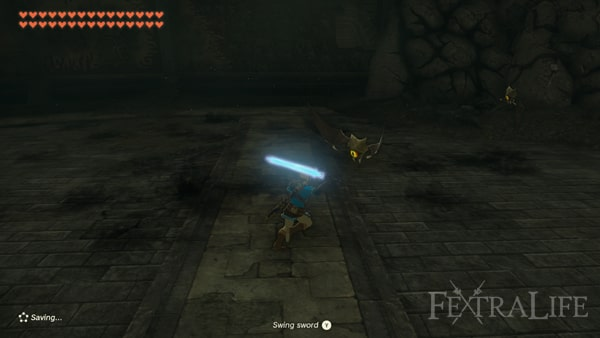

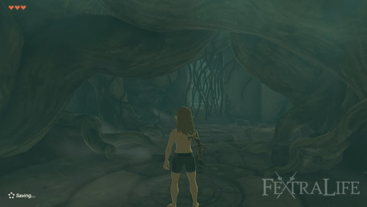
Great Sky Island – Room of Awakening (Đảo Trời – Phòng Thức Tỉnh)
Bạn nhận Cành Cây, mở túi đồ và trang bị (D-pad + cần phải). Hái ít nhất ba quả Táo để hồi máu, rồi hạ Soldier Construct đầu tiên — nhặt Sừng Construct và Zonai Charge nó rơi ra. Nhặt thêm Gậy Gỗ trong mấy túp lều quanh đây.
Gặp Steward Construct để nhận Purah Pad: từ giờ bạn mở được bản đồ và Nhật Ký Phiêu Lưu. Nhiệm vụ chính Find Princess Zelda được kích hoạt, điểm đánh dấu nằm ở Đền Thờ Thời Gian phía Bắc. Lúc này bạn chưa có Dù Lượn, muốn xuống thấp thì phải nhảy xuống nước hoặc men theo vách đá.
Xem ảnh (5)
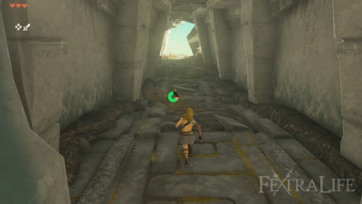
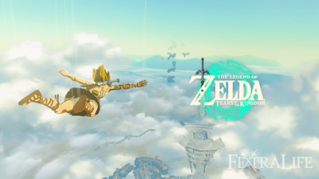
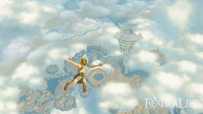


Reach the Temple of Time (Đến Đền Thờ Thời Gian)
Chạm viên đá xanh để bật cây cầu, đi qua và hạ Soldier Construct đứng canh. Hái thêm Táo dọc đường rồi dọn ba Soldier Construct chặn lối. Bơi qua hồ, leo cầu thang đá là tới Đền Thờ Nhỏ Ukouh; nhặt Nấm Rushroom mọc quanh đó.
Trong đền có ba bài giải đố. Bài một: dùng Siêu Tay nhấc tấm đá lát làm cầu. Bài hai: ghép hai tấm ván đá thành cây cầu dài. Bài ba: đặt ván gỗ lên móc treo làm cabin trượt trên thanh kim loại, canh lúc cabin tới thì nhảy vào. Chạm bàn thờ nhận Ánh Sáng Chúc Phúc.
Rauru xuất hiện, bảo bạn phải hồi phục năng lực đã mất và hoàn thành thêm các đền thờ nhỏ để mạnh lên.
Xem ảnh (3)
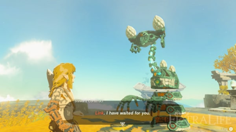
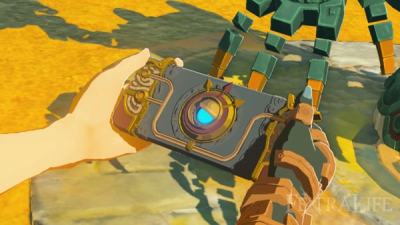
Xem ảnh (8)


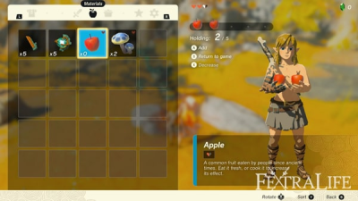

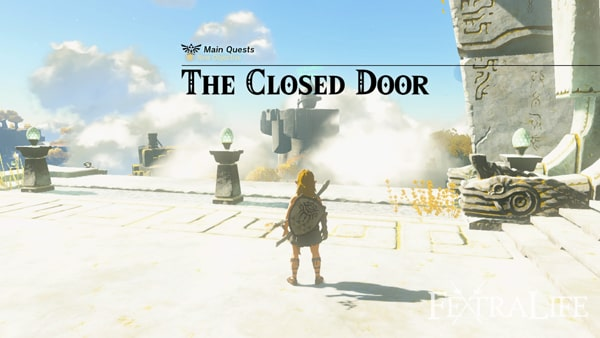
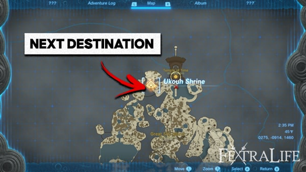
Ukouh Shrine – Ultrahand (Đền Thờ Nhỏ Ukouh – Siêu Tay)
Rời đền, đi về phía Tây rồi nhảy xuống vùng trũng; hạ Soldier Construct, nhặt cây cung đầu tiên cùng Nấm Trời và Mũi Tên. Leo lên cầu thang đá, đánh úp Soldier Construct canh trên đỉnh để lấy vũ khí cận chiến.
Đi tiếp về phía Tây, nhặt chiếc rìu đá dựng ở gốc cây, rồi chặt thân cây đổ xuống làm cầu bắc qua khe. Có Siêu Tay trong tay, bạn cũng nhấc được các tấm đá và ghép vật thể rời thành cầu tạm.
Xem ảnh (11)

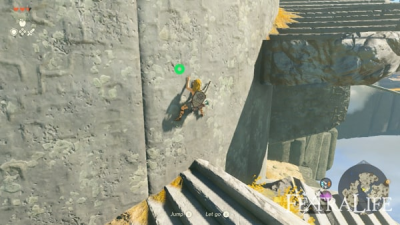

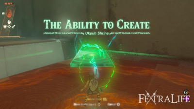

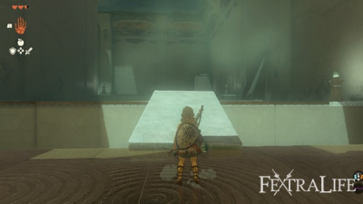
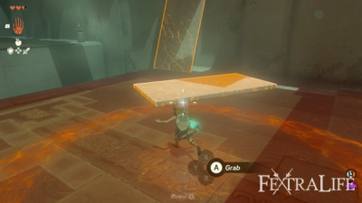
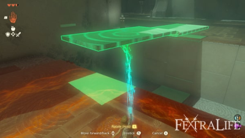
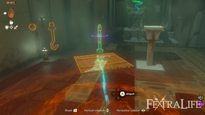
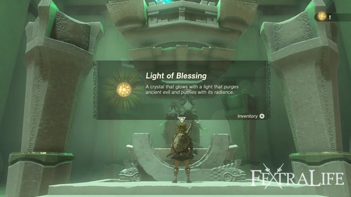
Xem ảnh (3)
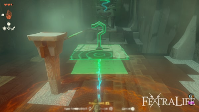
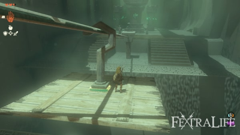
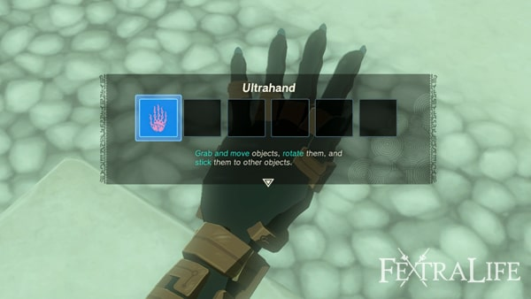
In-isa Shrine – Fuse (Đền Thờ Nhỏ In-isa – Ghép)
Rauru trao cho bạn năng lực Ghép. Bài một: ghép thanh Đại Kiếm Gỉ với tảng đá để thành cây búa, đập vỡ bức tường đá chặn đường.
Bài hai: đập cột đá để mở rương có 5 Mũi Tên; hái Quả Lửa, ghép vào mũi tên rồi bắn cháy giàn dây leo — rương rơi xuống cho Chìa Khóa Nhỏ, mở cửa đi tiếp.
Bài ba: hạ Captain Construct I, dùng mũi tên lửa đốt giàn dây leo trên sàn rồi đập vỡ tường đá bằng vũ khí vừa ghép. Chạm bàn thờ nhận Ánh Sáng Chúc Phúc.
Xem ảnh (8)
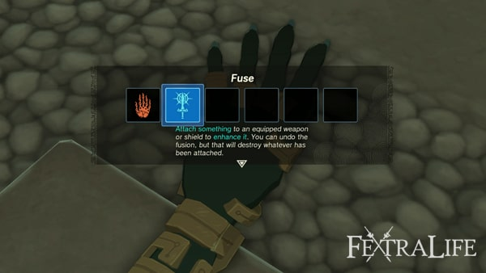
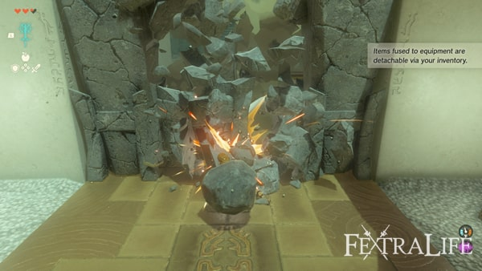
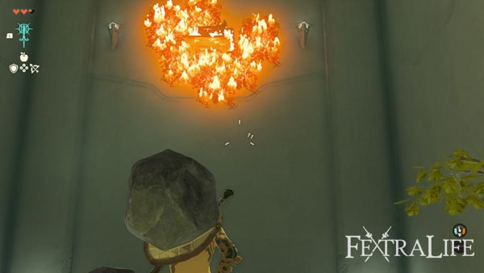
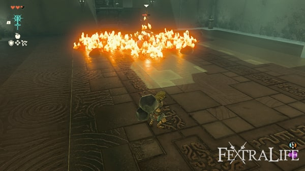
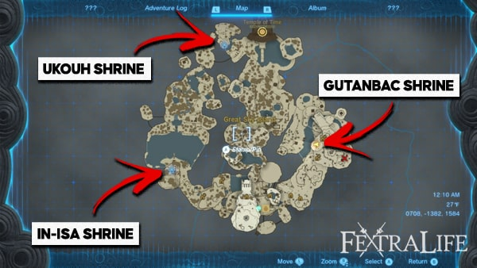
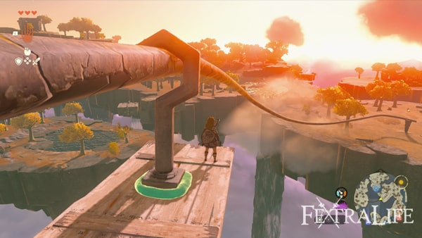
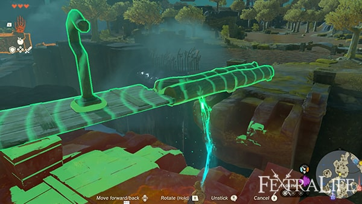
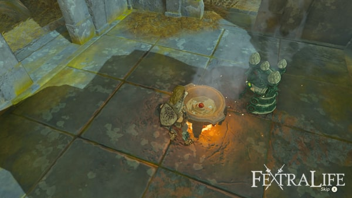
Xem ảnh (3)
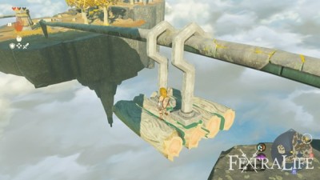
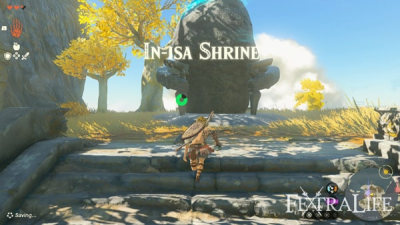
Gutanbac Shrine – Ascend (Đền Thờ Nhỏ Gutanbac – Xuyên)
Steward Construct đưa bạn Pin Năng Lượng và chỉ cách dùng thiết bị Zonai. Đi về phía Đông Nam vào hang: dọn hai Chuchu và hai Soldier Construct, mở rương cạnh nồi nấu ăn để lấy Lưỡi Hái Của Lính. Hang Pondside khá đơn giản — có Keese và một con Ếch Bubbul, hạ nó lấy Ngọc Bubbul.
Dùng Ghép đập vỡ tường đá, phá các trụ tinh thể (Muối Đá, Hồng Ngọc, Đá Lửa, Hổ Phách) rồi tìm chiếc Áo Cổ Đại. Đóng bè bằng 3 Khúc Gỗ và 2 Cánh Quạt để qua hồ. Trong Hang Khai Thác nhặt Hạt Sáng; Hang Hố Sâu có hai quả Ớt Cay — nhớ hái, vì ớt cay nấu thành món cay giúp chống lạnh khi lên vùng tuyết. Hang Không Đáy có thêm một con Ếch Bubbul, Hoa Bom và một con Like-Like.
Rauru trao năng lực Xuyên. Bài một: Xuyên lên trần để lên tầng trên. Bài hai: Xuyên vào cây cột có rương (Rìu Đá), Xuyên tiếp cột kế bên và hạ Soldier Construct. Bài ba: cắt dây cho tấm đá rơi xuống, Xuyên từ dưới lên, canh đúng lúc bệ di động trượt tới thì Xuyên để đáp lên. Chạm bàn thờ nhận Ánh Sáng Chúc Phúc.
Xem ảnh (10)
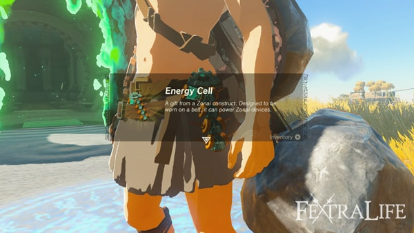
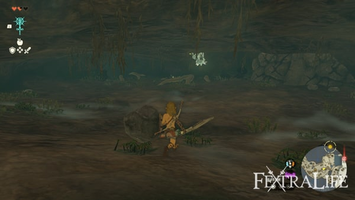
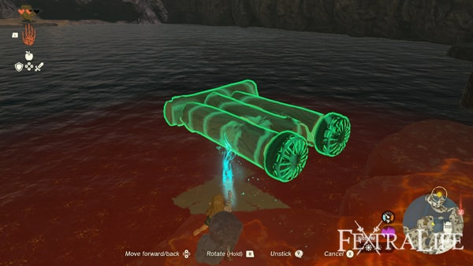
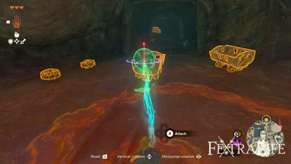
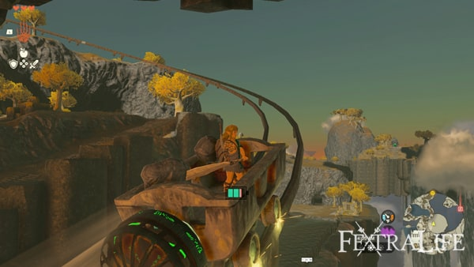
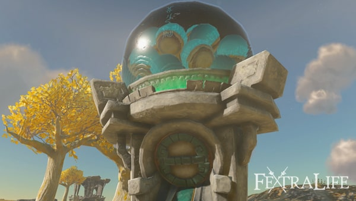
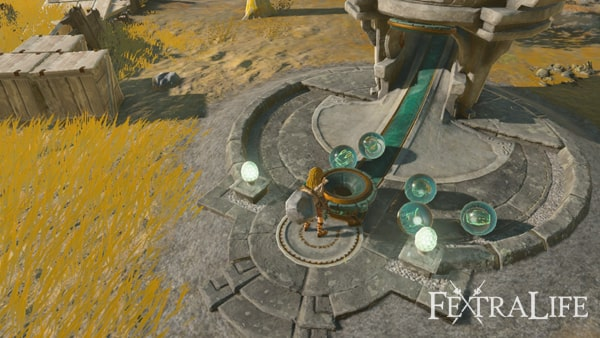
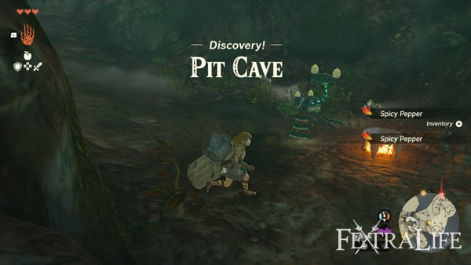
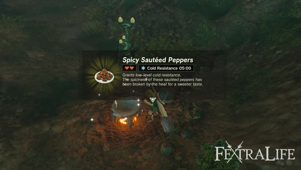
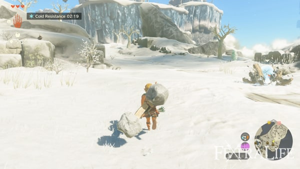
Return to Temple of Time & Nachoyah Shrine (Quay lại Đền Thờ Thời Gian và Đền Thờ Nhỏ Nachoyah)
Dùng Xuyên lên khu vực cao gần cửa hang Gutanbac. Trong thân cây có rương đựng Ống Chân Sưởi Cổ Đại. Quanh đây có Cánh Zonai và Máy Phân Phát Zonai; đặt cánh lên bệ phóng bằng Siêu Tay, nhảy lên rồi lượn về phía Đền Thờ Thời Gian — chưa có Dù Lượn nên phải tận dụng cánh rồi lao xuống hồ.
Leo lên đền, chạm cánh cửa đôi: Rauru nói chuyện, nhiệm vụ The Closed Door hoàn thành, bạn nhận Hồi Tưởng. Dùng Hồi Tưởng quay ngược các bánh răng khổng lồ để leo lên, đáp lên trụ giữa rồi quay ngược bánh răng trung tâm để sang khu trong. Ở đó có tượng Nữ Thần, nhưng cánh cửa lớn đòi một Bình Máu — muốn đổi phải có 4 Ánh Sáng Chúc Phúc.
Rauru bảo vẫn còn một đền thờ nhỏ nữa. Dịch chuyển về Phòng Thức Tỉnh, Xuyên qua khối đá cạnh bánh răng, quay ngược bánh gần nhất để nhảy lên và vào hang, tìm Đền Thờ Nhỏ Nachoyah. Bài một: quay ngược chiếc bè để nó đi ngược chiều và nhảy lên. Bài hai: quay ngược bè từ thác nước để lên cao; quay bánh răng lớn để lên bệ trên, lấy 10 Mũi Tên. Bài ba: hai kim đồng hồ, cổng chỉ mở khi hai kim chạm nhau — quay ngược kim chạy thuận để cả hai cùng quay và cửa mở.
Chạm bàn thờ nhận Ánh Sáng Chúc Phúc thứ tư, rồi đặt cánh lên bệ phóng để lượn về hồ trước Đền Thờ Thời Gian và đổi lấy Bình Máu đầu tiên.
Xem ảnh (22)
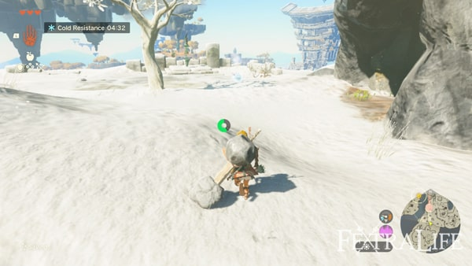
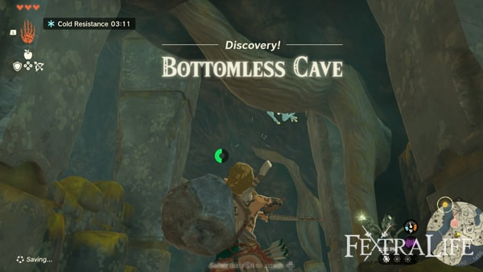
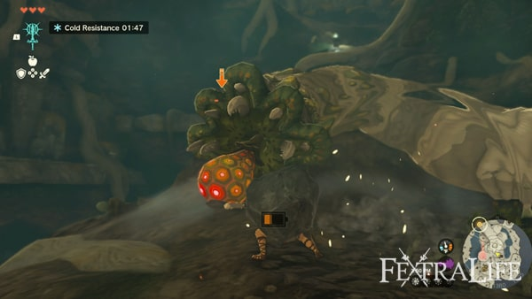
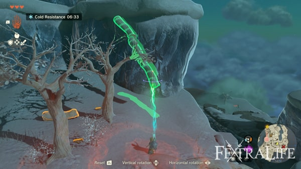
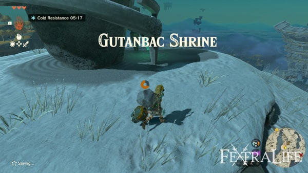
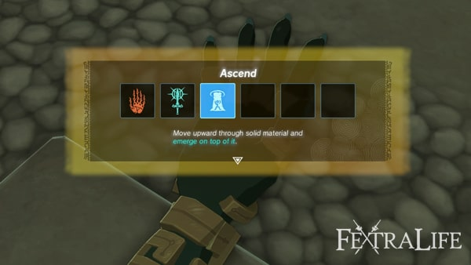
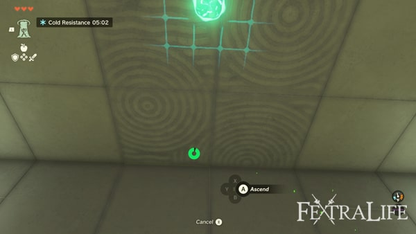
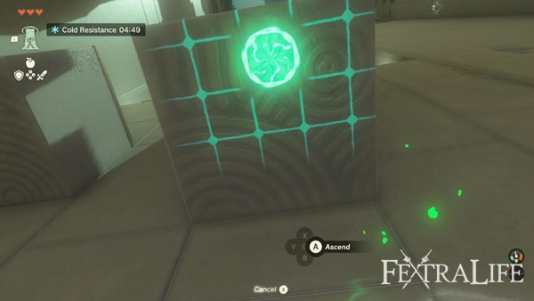
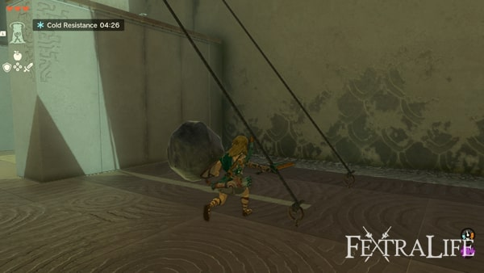
Mẹo: trước khi lên vùng tuyết, nấu sẵn món Ớt Cay Xào; tiết kiệm Zonai Charge; mang Hạt Sáng khi vào hang tối; nhặt thêm vũ khí cận chiến vì chúng rất dễ gãy; dùng Xuyên để đi tắt lên các mốc cao.
Prologue & Đảo Trời: 19/19 bước trong index đã có walkthrough chi tiết.